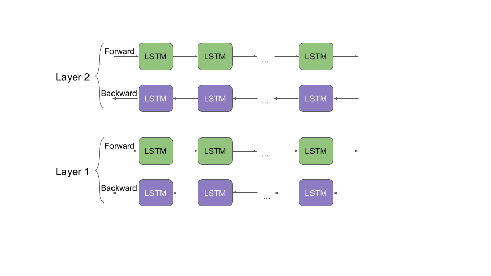
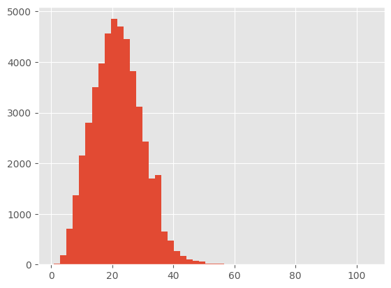

5.7 ELMo#
!wget -nc --no-cache -O init.py -q https://raw.githubusercontent.com/rramosp/2021.deeplearning/main/content/init.py
import init; init.init(force_download=False);
replicating local resources
ELMo: Embeddings from Language Models#
Word embeddings such as word2vec or GloVe provides an exact meaning to words. Eventhough they provided a great improvement to many NLP task, such “constant” meaning was a major drawback of this word embeddings as the meaning of words changes based on context, and thus this wasn’t the best option for Language Modelling.
For instance, after we train word2vec/Glove on a corpus we get as output one vector representation for, say the word cell. So even if we had a sentence like “He went to the prison cell with his cell phone to extract blood cell samples from inmates”, where the word cell has different meanings based on the sentence context, these models just collapse them all into one vector for cell in their output source.
Unlike most widely used word embeddings ELMo word representations are functions of the entire input sentence, instead of the single word. They are computed on top of two-layer Bidirectional Language Models (biLMs) with character convolutions, as a linear function of the internal network states. Therefore, the same word can have different word vectors under different contexts.
Deep contextualized word representations
Character-level Convolutional Networks
from IPython.display import Image
#Image(filename='local/imgs/ELMo.gif', width=1200)
Image(open('local/imgs/ELMo.gif','rb').read())

Given \(T\) tokens \((x_1,x_2,\cdots,x_T)\), a forward language model computes the probability of the sequence by modeling the probability of token \(x_k\) given the history \((x_1,\cdots, x_{k-1})\). This formulation has been addressed in the state of the art using many different approach, and more recently including some approximation based on Bidirectional Recurrent Networks.
ELMo is inspired in the Language Modelling problem, which has the advantage of being a self-supervised task.
A practical implication of this difference is that we can use word2vec and Glove vectors trained on a large corpus directly for downstream tasks. All we need is the vectors for the words. There is no need for the model itself that was used to train these vectors.
However, in the case of ELMo and BERT (we will see it in a forthcoming lecture), since they are context dependent, we need the model that was used to train the vectors even after training, since the models generate the vectors for a word based on context. source.
Let’s see how to define a simplified ELMo version from scratch:#
from keras import layers
class Highway(layers.Layer):
def __init__(self, size, n_layers=2, **kwargs):
super().__init__(**kwargs)
self.n_layers = n_layers
self.transforms = [layers.Dense(size, activation="relu") for _ in range(n_layers)]
self.gates = [layers.Dense(size, activation="sigmoid") for _ in range(n_layers)]
def call(self, x):
# x: (..., size)
for t, g in zip(self.transforms, self.gates):
h = t(x)
gate = g(x)
x = gate * h + (1.0 - gate) * x
return x
class CharCNNEmbedder(layers.Layer):
"""
Char-CNN token embedder.
Input: (batch, seq_len, char_len) integer indices
Output: (batch, seq_len, token_emb_dim)
"""
def __init__(self,
n_chars,
char_emb_dim=16,
token_emb_dim=512,
kernel_filters=None,
max_characters_per_token=50,
dropout=0.1,
**kwargs):
super().__init__(**kwargs)
self.char_embedding = layers.Embedding(input_dim=n_chars, output_dim=char_emb_dim, mask_zero=True)
self.max_characters_per_token = max_characters_per_token
self.dropout = layers.Dropout(dropout)
if kernel_filters is None:
# (kernel_size, n_filters)
kernel_filters = [(1, 50), (2, 100), (3, 150), (4, 200)]
self.convs = []
total_filters = 0
for k, f in kernel_filters:
# Conv1D expects (batch, steps, channels) with channels last
self.convs.append(layers.Conv1D(filters=f, kernel_size=k, padding="valid", activation="relu"))
total_filters += f
self.highway = Highway(total_filters, n_layers=2)
self.proj = layers.Dense(token_emb_dim)
def call(self, token_chars):
# token_chars: (batch, seq_len, char_len)
b, s, c = tf.shape(token_chars)[0], tf.shape(token_chars)[1], tf.shape(token_chars)[2]
# Flatten tokens: (batch*seq_len, char_len)
flat = tf.reshape(token_chars, [-1, tf.shape(token_chars)[2]]) # (B*S, C)
# Char embedding -> (B*S, C, char_emb)
emb = self.char_embedding(flat)
# Apply convs: Conv1D over char sequence dimension (C)
conv_outs = []
for conv in self.convs:
z = conv(emb) # (B*S, C', filters)
# global max pool over time dimension
z = tf.reduce_max(z, axis=1) # (B*S, filters)
conv_outs.append(z)
z = tf.concat(conv_outs, axis=-1) # (B*S, total_filters)
z = self.highway(z)
z = self.proj(z) # (B*S, token_emb_dim)
z = self.dropout(z)
# reshape back to (batch, seq_len, token_emb_dim)
out = tf.reshape(z, [b, s, tf.shape(z)[-1]])
return out
We can also use pre-trained ELMo from tensorflow hub repository.
Download the model#
Let’s load ELMo model. This will take some time because the model is over 350 Mb in size
import tensorflow_hub as hub
import tensorflow as tf
/Users/jdariasl/.cache/uv/archive-v0/mTE5xBvw1heDpxC7T3_--/lib/python3.9/site-packages/urllib3/__init__.py:35: NotOpenSSLWarning: urllib3 v2 only supports OpenSSL 1.1.1+, currently the 'ssl' module is compiled with 'LibreSSL 2.8.3'. See: https://github.com/urllib3/urllib3/issues/3020
warnings.warn(
elmo = hub.KerasLayer("https://tfhub.dev/google/elmo/2",
input_shape=[], # string input
dtype=tf.string,
trainable=False,
signature="default",
output_key="elmo") # or as needed
embeddings = elmo(tf.constant(["i like green eggs and ham",
"would you eat them in a box"]))
print(embeddings.shape)
(2, 7, 1024)
Unfortunately, the tensorflow_hub implementation of ELMo is not compatible with tf2, so we will train a simplified version from scratch.
Name Entity Recognition (NER)#
NER is a sequential labeling problem where the aim is to label every word in a sentence of pargraph, according to a list of “entity” classes. This is different from part of Speech (POS) tagging, which explains how a word is used in a sentence For more information about POS.
Tipical labels in NER are:
import nltk
# download necessary data
nltk.download("maxent_ne_chunker")
nltk.download("words")
nltk.download("punkt")
nltk.download("averaged_perceptron_tagger")
nltk.download('averaged_perceptron_tagger_eng')
nltk.download('maxent_ne_chunker_tab')
[nltk_data] Downloading package maxent_ne_chunker to
[nltk_data] /Users/jdariasl/nltk_data...
[nltk_data] Package maxent_ne_chunker is already up-to-date!
[nltk_data] Downloading package words to /Users/jdariasl/nltk_data...
[nltk_data] Package words is already up-to-date!
[nltk_data] Downloading package punkt to /Users/jdariasl/nltk_data...
[nltk_data] Package punkt is already up-to-date!
[nltk_data] Downloading package averaged_perceptron_tagger to
[nltk_data] /Users/jdariasl/nltk_data...
[nltk_data] Package averaged_perceptron_tagger is already up-to-
[nltk_data] date!
[nltk_data] Downloading package averaged_perceptron_tagger_eng to
[nltk_data] /Users/jdariasl/nltk_data...
[nltk_data] Package averaged_perceptron_tagger_eng is already up-to-
[nltk_data] date!
[nltk_data] Downloading package maxent_ne_chunker_tab to
[nltk_data] /Users/jdariasl/nltk_data...
[nltk_data] Package maxent_ne_chunker_tab is already up-to-date!
True
GPE stands for Geo-Political Entity, GSP stands for Geographical-Social-Political Entity. and there are other definitions of labels that include more classes Detailed info can be found here.
NER task is commonly viewed as a sequential prediction problem in which we aim at assigning the correct label for each token. Different ways of encoding information in a set of labels make different chunk representation. The two most popular schemes are BIO and BILOU source.
BIO stands for Beginning, Inside and Outside (of a text segment).
Similar but more detailed than BIO, BILOU encode the Beginning, the Inside and Last token of multi-token chunks while differentiate them from Unit-length chunks
import pandas as pd
import math
import numpy as np
import matplotlib.pyplot as plt
plt.style.use("ggplot")
data = pd.read_csv("local/data/ner_dataset.csv", encoding="latin1")
data = data.drop(['POS'], axis =1)
data = data.ffill()
data.tail(12)
| Sentence # | Word | Tag | |
|---|---|---|---|
| 1048563 | Sentence: 47958 | exploded | O |
| 1048564 | Sentence: 47958 | upon | O |
| 1048565 | Sentence: 47958 | impact | O |
| 1048566 | Sentence: 47958 | . | O |
| 1048567 | Sentence: 47959 | Indian | B-gpe |
| 1048568 | Sentence: 47959 | forces | O |
| 1048569 | Sentence: 47959 | said | O |
| 1048570 | Sentence: 47959 | they | O |
| 1048571 | Sentence: 47959 | responded | O |
| 1048572 | Sentence: 47959 | to | O |
| 1048573 | Sentence: 47959 | the | O |
| 1048574 | Sentence: 47959 | attack | O |
words = set(list(data['Word'].values))
words.add('PADword')
n_words = len(words)
n_words
35178
tags = list(set(data["Tag"].values))
n_tags = len(tags)
n_tags
17
tags
['B-geo',
'B-org',
'B-art',
'I-geo',
'B-tim',
'I-per',
'B-gpe',
'B-eve',
'I-org',
'B-per',
'I-eve',
'O',
'B-nat',
'I-art',
'I-gpe',
'I-nat',
'I-tim']
class SentenceGetter(object):
def __init__(self, data):
self.n_sent = 1
self.data = data
self.empty = False
agg_func = lambda s: [(w, t) for w, t in zip(s["Word"].values.tolist(),
s["Tag"].values.tolist())]
# Exclude grouping column when applying
self.grouped = (
self.data
.drop(columns=["Sentence #"]) # removes grouping column
.groupby(self.data["Sentence #"], group_keys=False)
.apply(agg_func)
)
self.sentences = [s for s in self.grouped]
def get_next(self):
if self.n_sent <= len(self.sentences):
s = self.sentences[self.n_sent - 1]
self.n_sent += 1
return s
else:
return None
getter = SentenceGetter(data)
sent = getter.get_next()
print(sent)
[('Thousands', 'O'), ('of', 'O'), ('demonstrators', 'O'), ('have', 'O'), ('marched', 'O'), ('through', 'O'), ('London', 'B-geo'), ('to', 'O'), ('protest', 'O'), ('the', 'O'), ('war', 'O'), ('in', 'O'), ('Iraq', 'B-geo'), ('and', 'O'), ('demand', 'O'), ('the', 'O'), ('withdrawal', 'O'), ('of', 'O'), ('British', 'B-gpe'), ('troops', 'O'), ('from', 'O'), ('that', 'O'), ('country', 'O'), ('.', 'O')]
sentences = getter.sentences
print(len(sentences))
47959
largest_sen = max(len(sen) for sen in sentences)
print('biggest sentence has {} words'.format(largest_sen))
biggest sentence has 104 words
%matplotlib inline
plt.hist([len(sen) for sen in sentences], bins= 50)
plt.show()

words2index = {w:i for i,w in enumerate(words)}
tags2index = {t:i for i,t in enumerate(tags)}
print(words2index['London'])
print(tags2index['B-geo'])
31915
0
ELMo embedding represents every word as 1024 feature vector; however, we will use a 128 embedding dimension in our implementation. Therefore, to reduce computational complexity and based on the former histogram, we can truncate the sequences to a maximum length of 50.
max_len = 50
X = [[w[0]for w in s] for s in sentences]
new_X = []
for seq in X:
new_seq = []
for i in range(max_len):
try:
new_seq.append(seq[i])
except:
new_seq.append("PADword")
new_X.append(new_seq)
new_X[15]
['Israeli',
'officials',
'say',
'Prime',
'Minister',
'Ariel',
'Sharon',
'will',
'undergo',
'a',
'medical',
'procedure',
'Thursday',
'to',
'close',
'a',
'tiny',
'hole',
'in',
'his',
'heart',
'discovered',
'during',
'treatment',
'for',
'a',
'minor',
'stroke',
'suffered',
'last',
'month',
'.',
'PADword',
'PADword',
'PADword',
'PADword',
'PADword',
'PADword',
'PADword',
'PADword',
'PADword',
'PADword',
'PADword',
'PADword',
'PADword',
'PADword',
'PADword',
'PADword',
'PADword',
'PADword']
from keras.preprocessing.sequence import pad_sequences
y = [[tags2index[w[1]] for w in s] for s in sentences]
y = pad_sequences(maxlen=max_len, sequences=y, padding="post", value=tags2index["O"])
y[15]
array([ 6, 11, 11, 9, 5, 5, 5, 11, 11, 11, 11, 11, 4, 11, 11, 11, 11,
11, 11, 11, 11, 11, 11, 11, 11, 11, 11, 11, 11, 11, 11, 11, 11, 11,
11, 11, 11, 11, 11, 11, 11, 11, 11, 11, 11, 11, 11, 11, 11, 11],
dtype=int32)
from sklearn.model_selection import train_test_split
X_tr, X_te, y_tr, y_te = train_test_split(new_X, y, test_size=0.1, random_state=2018)
from keras.models import Model
Excercise 1: Complete the model arquitecture#
After the Embedding layer include two Bidirectional LSTM layers with 512 cells each. The second layer must be on top of the first one. As output layer include a Dense layer which takes as input the sum of the two Bidirectional layers output’s. Remember that in NER the output must be a sequence of same length as the input.
chars = ["<pad>"] + list("abcdefghijklmnopqrstuvwxyz.,!?-") + ["<unk>"]
char2idx = {c: i for i, c in enumerate(chars)}
n_chars = len(chars)
def sentences_to_char_ids(sentences, max_chars=16):
"""
sentences: list of list of tokens, e.g. [["I","love","NLP"], ["this","is","ok"]]
returns: np.array shape (batch, seq_len, max_chars)
"""
batch = []
max_len = max(len(s) for s in sentences)
for tokens in sentences:
token_chars = []
for tok in tokens:
tok = tok.lower()
chars_idx = [char2idx.get(ch, char2idx["<unk>"]) for ch in tok][:max_chars]
# pad char seq
pad = [char2idx["<pad>"]] * (max_chars - len(chars_idx))
token_chars.append(chars_idx + pad)
# pad tokens to max_len
for _ in range(max_len - len(tokens)):
token_chars.append([char2idx["<pad>"]] * max_chars)
batch.append(token_chars)
return np.array(batch, dtype=np.int32)
class SimpleElmo(Model):
def __init__(self,
n_chars,
n_tags,
char_emb_dim=16,
token_emb_dim=256,
lstm_hidden=256,
kernel_filters=None,
max_characters_per_token=50,
dropout=0.1,
**kwargs):
super().__init__(**kwargs)
self.char_encoder = CharCNNEmbedder(
n_chars=n_chars,
char_emb_dim=char_emb_dim,
token_emb_dim=token_emb_dim,
kernel_filters=kernel_filters,
max_characters_per_token=max_characters_per_token,
dropout=dropout
)
# project token embedding into same dim as BiLSTM output if needed
self.token_proj = layers.Dense(2 * lstm_hidden) if token_emb_dim != 2 * lstm_hidden else None
self.bilm1 = layers.Bidirectional(layers.LSTM(units=lstm_hidden, return_sequences=True,
recurrent_dropout=dropout, dropout=dropout))
self.bilm2 = layers.Bidirectional(layers.LSTM(units=lstm_hidden, return_sequences=True,
recurrent_dropout=dropout, dropout=dropout))
self.out = layers.TimeDistributed(Dense(n_tags, activation="softmax"))
def call(self, token_chars, training=False, return_all_layers=False):
"""
token_chars: (batch, seq_len, char_len) int32
return_all_layers: if True return list [layer0_proj, layer1_out, ...]
else return mixed embeddings (batch, seq_len, dim)
"""
# 1) char-CNN token embeddings
token_emb = self.char_encoder(token_chars, training=training) # (batch, seq_len, token_emb_dim)
# 2) optionally project to BiLSTM expected dim
if self.token_proj is not None:
token_proj = self.token_proj(token_emb) # (batch, seq_len, 2*lstm_hidden)
else:
token_proj = token_emb
# 3) BiLM stacked outputs
layer_outputs = self.bilm1(token_proj) # list of (batch, seq_len, 2*lstm_hidden)
layer_outputs2 = self.bilm2(token_proj) # list of (batch, seq_len, 2*lstm_hidden)
# prepare list to mix: [token_proj, layer1, layer2, ...]
mix = layer_outputs + layer_outputs2
return self.out(mix)
model = SimpleElmo(n_chars=n_chars,
n_tags = n_tags,
token_emb_dim=128,
lstm_hidden=128,
dropout=0.1)
model.compile(optimizer="adam", loss="sparse_categorical_crossentropy", metrics=["accuracy"])
Split data into training and validation subsets, use both during training to evaluate training and validation accuracies.
batch_size = 32
X_tr, X_val = X_tr[:1213*batch_size], X_tr[-135*batch_size:]
y_tr, y_val = y_tr[:1213*batch_size], y_tr[-135*batch_size:]
y_tr = y_tr.reshape(y_tr.shape[0], y_tr.shape[1], 1)
y_val = y_val.reshape(y_val.shape[0], y_val.shape[1], 1)
Train the model using a batch_size = 32 and 5 epochs. Use verbose=1 to see the evolution of the training process.
Xtr_c = sentences_to_char_ids(X_tr, max_chars=16) # (batch, seq_len, char_len)
Xval_c = sentences_to_char_ids(X_val, max_chars=16) # (batch, seq_len, char_len)
model.fit(Xtr_c, y_tr, validation_data=(Xval_c, y_val),
batch_size=batch_size, epochs=5, verbose=1)
Epoch 1/5
1213/1213 ━━━━━━━━━━━━━━━━━━━━ 143s 118ms/step - accuracy: 0.9534 - loss: 0.1753 - val_accuracy: 0.9741 - val_loss: 0.0913
Epoch 2/5
1213/1213 ━━━━━━━━━━━━━━━━━━━━ 177s 146ms/step - accuracy: 0.9753 - loss: 0.0861 - val_accuracy: 0.9791 - val_loss: 0.0720
Epoch 3/5
1213/1213 ━━━━━━━━━━━━━━━━━━━━ 184s 152ms/step - accuracy: 0.9791 - loss: 0.0713 - val_accuracy: 0.9809 - val_loss: 0.0645
Epoch 4/5
1213/1213 ━━━━━━━━━━━━━━━━━━━━ 1124s 928ms/step - accuracy: 0.9806 - loss: 0.0642 - val_accuracy: 0.9818 - val_loss: 0.0621
Epoch 5/5
1213/1213 ━━━━━━━━━━━━━━━━━━━━ 23985s 20s/step - accuracy: 0.9821 - loss: 0.0577 - val_accuracy: 0.9824 - val_loss: 0.0579
<keras.src.callbacks.history.History at 0x34f9d8430>
#!uv add seqeval
#!pip install seqeval
from seqeval.metrics import precision_score, recall_score, f1_score, classification_report
X_te = X_te[:149*batch_size]
X_te_c = sentences_to_char_ids(X_te, max_chars=16) # (batch, seq_len, char_len)
test_pred = model.predict(X_te_c, verbose=1)
149/149 ━━━━━━━━━━━━━━━━━━━━ 4s 27ms/step
idx2tag = {i: w for w, i in tags2index.items()}
def pred2label(pred):
out = []
for pred_i in pred:
out_i = []
for p in pred_i:
p_i = np.argmax(p)
out_i.append(idx2tag[p_i].replace("PADword", "O"))
out.append(out_i)
return out
def test2label(pred):
out = []
for pred_i in pred:
out_i = []
for p in pred_i:
out_i.append(idx2tag[p].replace("PADword", "O"))
out.append(out_i)
return out
pred_labels = pred2label(test_pred)
test_labels = test2label(y_te[:149*32])
print("F1-score: {:.1%}".format(f1_score(test_labels, pred_labels)))
F1-score: 78.1%
Note that a pre-trained ELMo would achieve a F1-score of around 82%
print(classification_report(test_labels, pred_labels, zero_division=0))
precision recall f1-score support
art 0.00 0.00 0.00 49
eve 0.24 0.24 0.24 33
geo 0.81 0.86 0.84 3720
gpe 0.93 0.94 0.94 1591
nat 0.58 0.32 0.41 22
org 0.64 0.48 0.55 2061
per 0.68 0.73 0.71 1677
tim 0.87 0.82 0.84 2148
micro avg 0.79 0.77 0.78 11301
macro avg 0.60 0.55 0.57 11301
weighted avg 0.78 0.77 0.77 11301
Let’s see the predictions for one sequence:
i = 390
p = model.predict(X_te_c[i:i+batch_size])[0]
p = np.argmax(p, axis=-1)
print("{:15} {:5}: ({})".format("Word", "Pred", "True"))
print("="*30)
for w, true, pred in zip(X_te[i], y_te[i], p):
if w != "PADword":
print("{:15}:{:5} ({})".format(w, tags[pred], tags[true]))
1/1 ━━━━━━━━━━━━━━━━━━━━ 0s 64ms/step
Word Pred : (True)
==============================
Citing :O (O)
a :O (O)
draft :O (O)
report :O (O)
from :O (O)
the :O (O)
U.S. :B-geo (B-org)
Government :O (I-org)
Accountability :O (O)
office :O (O)
, :O (O)
The :O (B-org)
New :B-org (I-org)
York :I-org (I-org)
Times :I-org (I-org)
said :O (O)
Saturday :B-tim (B-tim)
the :O (O)
losses :O (O)
amount :O (O)
to :O (O)
between :O (O)
1,00,000 :O (O)
and :O (O)
3,00,000 :O (O)
barrels :O (O)
a :O (O)
day :O (O)
of :O (O)
Iraq :B-geo (B-geo)
's :O (O)
declared :O (O)
oil :O (O)
production :O (O)
over :O (O)
the :O (O)
past :B-tim (B-tim)
four :I-tim (I-tim)
years :O (O)
. :O (O)
Lest’s compare the result with a simple Embedding layer instead of ELMo#
For the sake of comparison, create a model using a conventional Embedding layer, instead of ELMo model. We are going to use an output dimension of 128 for the Embedding layer and 10000 words dictionary for tokanization.
class SentenceGetter(object):
def __init__(self, data):
self.n_sent = 1
self.data = data
self.empty = False
#agg_func = lambda s: [(w, t) for w, t in zip(s["Word"].values.tolist(),s["Tag"].values.tolist())]}
self.in_grouped = self.data.groupby("Sentence #")["Word"].apply(lambda s: " ".join(s))
self.out_grouped = self.data.groupby("Sentence #")["Tag"].apply(lambda s: " ".join(s))
self.input_sentences = [s for s in self.in_grouped]
self.output_targets = [s for s in self.out_grouped]
def get_next(self):
try:
i = self.in_grouped["Sentence: {}".format(self.n_sent)]
o = self.out_grouped["Sentence: {}".format(self.n_sent)]
self.n_sent += 1
return i,o
except:
return None
getter = SentenceGetter(data)
sent_input, out_put = getter.get_next()
sentences = getter.input_sentences
targets = getter.output_targets
print(len(sentences))
print(len(targets))
47959
47959
from keras.preprocessing.sequence import pad_sequences
y = [[tags2index[w] for w in s.split(' ')] for s in targets]
y = pad_sequences(maxlen=max_len, sequences=y, padding="post", value=tags2index["O"])
y[15]
array([ 6, 11, 11, 9, 5, 5, 5, 11, 11, 11, 11, 11, 4, 11, 11, 11, 11,
11, 11, 11, 11, 11, 11, 11, 11, 11, 11, 11, 11, 11, 11, 11, 11, 11,
11, 11, 11, 11, 11, 11, 11, 11, 11, 11, 11, 11, 11, 11, 11, 11],
dtype=int32)
from tensorflow.keras.preprocessing.text import Tokenizer
word_tokenizer = Tokenizer(num_words=10000)
# fit the tokenizer on the documents
word_tokenizer.fit_on_texts(sentences)
# summarize what was learned
#print(word_tokenizer.word_counts)
#print(word_tokenizer.document_count)
#print(word_tokenizer.word_index)
#print(word_tokenizer.word_docs)
# integer encode documents
encoded_docs = word_tokenizer.texts_to_sequences(sentences)
#print(encoded_docs)
len(encoded_docs[0])
23
NewX = pad_sequences(maxlen=max_len, sequences=encoded_docs, padding="post", value=0)
NewX[15]
array([ 110, 33, 26, 98, 56, 1649, 834, 32, 5699, 5, 780,
3787, 76, 4, 543, 5, 4298, 6304, 2, 30, 1720, 1121,
84, 1236, 8, 5, 3083, 2845, 1275, 52, 97, 0, 0,
0, 0, 0, 0, 0, 0, 0, 0, 0, 0, 0,
0, 0, 0, 0, 0, 0], dtype=int32)
from sklearn.model_selection import train_test_split
X_tr, X_te, y_tr, y_te = train_test_split(NewX, y, test_size=0.1, random_state=2018)
X_tr, X_val = X_tr[:1213*batch_size], X_tr[-135*batch_size:]
y_tr, y_val = y_tr[:1213*batch_size], y_tr[-135*batch_size:]
y_tr = y_tr.reshape(y_tr.shape[0], y_tr.shape[1], 1)
y_val = y_val.reshape(y_val.shape[0], y_val.shape[1], 1)
from keras.layers import Embedding
input_text = Input(shape=(max_len,))
embedding = Embedding(input_dim=10000, output_dim=128, mask_zero=True)(input_text)
# Complete the model architecture here:
x = Bidirectional(LSTM(units=128, return_sequences=True,
recurrent_dropout=0.1, dropout=0.1))(embedding)
x_rnn = Bidirectional(LSTM(units=128, return_sequences=True,
recurrent_dropout=0.1, dropout=0.1))(x)
x = add([x, x_rnn]) # residual connection to the first biLSTM
out = TimeDistributed(Dense(n_tags, activation="softmax"))(x)
model2 = Model(input_text, out)
model2.compile(optimizer="adam", loss="sparse_categorical_crossentropy", metrics=["accuracy"])
model2.fit(np.array(X_tr), y_tr, validation_data=(np.array(X_val), y_val),
batch_size=batch_size, epochs=5, verbose=1)
Epoch 1/5
1213/1213 ━━━━━━━━━━━━━━━━━━━━ 75s 60ms/step - accuracy: 0.9332 - loss: 0.6521 - val_accuracy: 0.9498 - val_loss: 0.3776
Epoch 2/5
1213/1213 ━━━━━━━━━━━━━━━━━━━━ 79s 65ms/step - accuracy: 0.9517 - loss: 0.3461 - val_accuracy: 0.9536 - val_loss: 0.3345
Epoch 3/5
1213/1213 ━━━━━━━━━━━━━━━━━━━━ 88s 73ms/step - accuracy: 0.9563 - loss: 0.2946 - val_accuracy: 0.9555 - val_loss: 0.3173
Epoch 4/5
1213/1213 ━━━━━━━━━━━━━━━━━━━━ 87s 72ms/step - accuracy: 0.9607 - loss: 0.2569 - val_accuracy: 0.9562 - val_loss: 0.3134
Epoch 5/5
1213/1213 ━━━━━━━━━━━━━━━━━━━━ 89s 73ms/step - accuracy: 0.9639 - loss: 0.2304 - val_accuracy: 0.9563 - val_loss: 0.3200
<keras.src.callbacks.history.History at 0x3251b8730>
X_te = X_te[:149*batch_size,:]
test_pred = model2.predict(np.array(X_te), verbose=1)
149/149 ━━━━━━━━━━━━━━━━━━━━ 2s 13ms/step
idx2tag = {i: w for w, i in tags2index.items()}
def pred2label(pred):
out = []
for pred_i in pred:
out_i = []
for p in pred_i:
p_i = np.argmax(p)
out_i.append(idx2tag[p_i].replace("PADword", "O"))
out.append(out_i)
return out
def test2label(pred):
out = []
for pred_i in pred:
out_i = []
for p in pred_i:
out_i.append(idx2tag[p].replace("PADword", "O"))
out.append(out_i)
return out
pred_labels = pred2label(test_pred)
test_labels = test2label(y_te[:149*32])
print("F1-score: {:.1%}".format(f1_score(test_labels, pred_labels)))
F1-score: 51.5%
print(classification_report(test_labels, pred_labels))
precision recall f1-score support
art 0.00 0.00 0.00 49
eve 0.14 0.09 0.11 33
geo 0.62 0.47 0.53 3720
gpe 0.80 0.63 0.70 1591
nat 0.20 0.23 0.21 22
org 0.49 0.32 0.38 2061
per 0.50 0.43 0.46 1677
tim 0.63 0.45 0.52 2148
micro avg 0.60 0.45 0.52 11301
macro avg 0.42 0.33 0.37 11301
weighted avg 0.60 0.45 0.51 11301
Note the performance drop in this case!
Let’s see the predictions for the same sentenced analysed before:
i = 390
p = model2.predict(np.array(X_te[i:i+batch_size]))[0]
p = np.argmax(p, axis=-1)
print("{:15} {:5}: ({})".format("Word", "Pred", "True"))
print("="*30)
for w, true, pred in zip(X_te[i], y_te[i], p):
if w != "PADword":
print("{:15}:{:5} ({})".format(w, tags[pred], tags[true]))
1/1 ━━━━━━━━━━━━━━━━━━━━ 0s 29ms/step
Word Pred : (True)
==============================
2327:O (O)
5:O (O)
1604:O (O)
144:O (O)
21:O (O)
1:O (O)
14:O (B-org)
20:B-org (I-org)
34:I-org (O)
8632:I-org (O)
383:I-org (O)
1:O (B-org)
49:B-org (I-org)
436:I-org (I-org)
784:I-org (I-org)
16:I-org (O)
95:B-tim (B-tim)
1:O (O)
1890:O (O)
2436:O (O)
4:O (O)
109:O (O)
155:O (O)
583:O (O)
88:O (O)
6:O (O)
356:O (O)
583:O (O)
88:O (O)
1559:O (B-geo)
5:O (O)
125:O (O)
3:O (O)
60:O (O)
7:O (O)
827:O (O)
90:O (B-tim)
589:O (I-tim)
79:O (O)
1:O (O)
369:O (O)
137:O (O)
116:O (O)
0:O (O)
0:O (O)
0:O (O)
0:O (O)
0:O (O)
0:O (O)
0:O (O)